对于同一物体来说，当从不同的角度去观察的时候，观察到的物体形状往往是不同的。多角度观察可以培养孩子的观察能力、空间想象能力和多角度看问题的能力。在实际生活中，家长可以刻意地安排孩子从多个角度去观察事物，逐步促进孩子空间概念的发展。
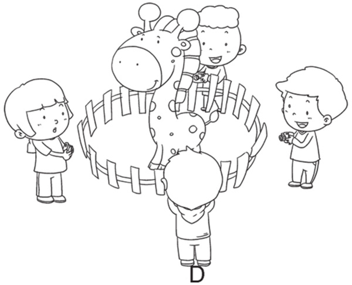
典型例题 1 仔细观察下面的积木块。
从上面往下看，看到的图形是（ ）；从前面往后看，看到的图形是（ ）；从右侧向左侧看，看到的图形是（ ）。
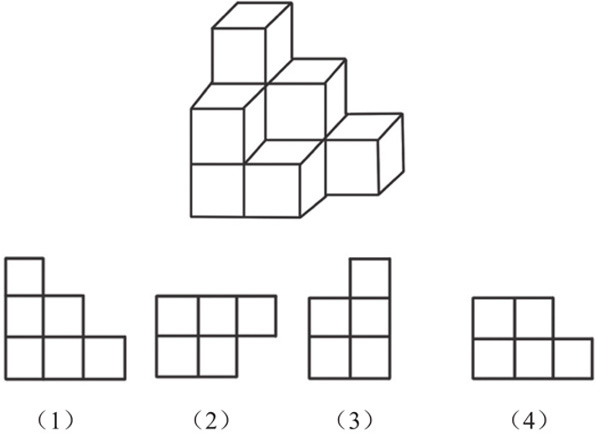
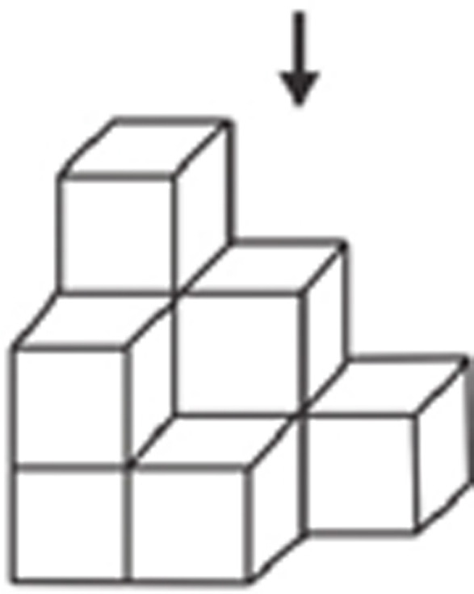
箭头所指的观察方向是从上面往下看，看到的图形是（2）；
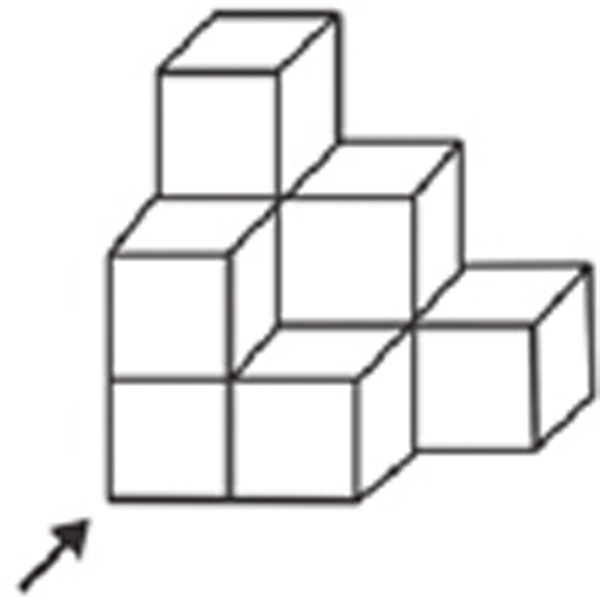
箭头所指的观察方向是从前面往后看，看到的图形是（1）；
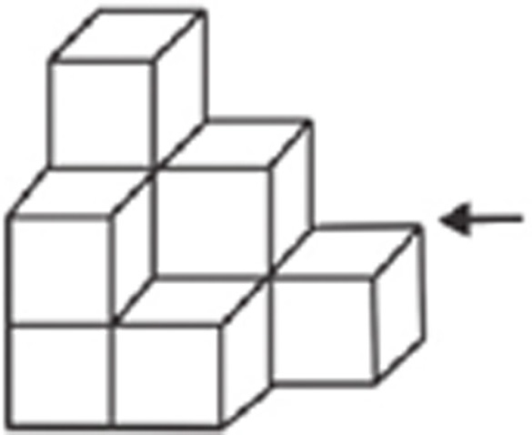
箭头所指的观察方向是从右侧往左侧看，看到的图形是（3）。
典型例题 2 有4个小朋友参观狮身人面像，他们从不同的方向给狮身人面像拍照，你知道下面的照片分别是哪个小朋友拍的吗？
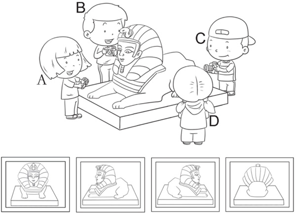
从不同的角度给事物拍照，拍出的照片是不一样的，每个小朋友拍的对应照片如下图所示。
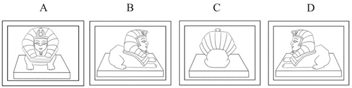
1.仔细观察下面的积木块。
从上面往下看，看到的图形是（ ）；从前面往后看，看到的图形是（ ）；从右侧向左侧看，看到的图形是（ ）。
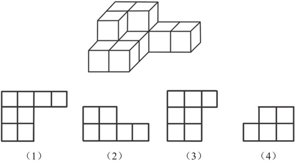
2.下面的积木块中，哪个积木块从前面往后看，能看到1个正方形？哪个积木块从前面往后看，能看到2个正方形？哪个积木块从前面往后看，能看到3个正方形？
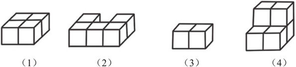
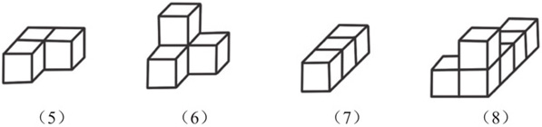
3.从侧面看，下面的积木块中，哪几个积木块是正方形？是1个小正方形的是哪个积木块？是4个小正方形的是哪个积木块？是9个小正方形的是哪个积木块？
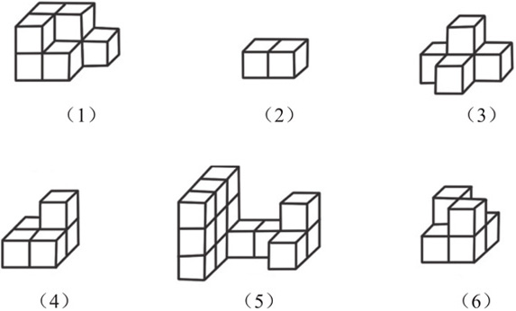
4.6个小朋友分别从不同的方向观察水壶，你能找到每个小朋友观察到的图形吗？
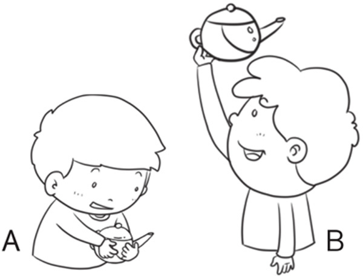
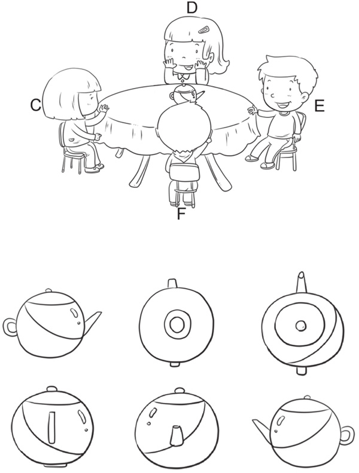
5.有4个小朋友在动物园的长颈鹿馆参观长颈鹿，他们从不同的方向给长颈鹿拍照，你知道下面的照片分别是哪个小朋友拍的吗？
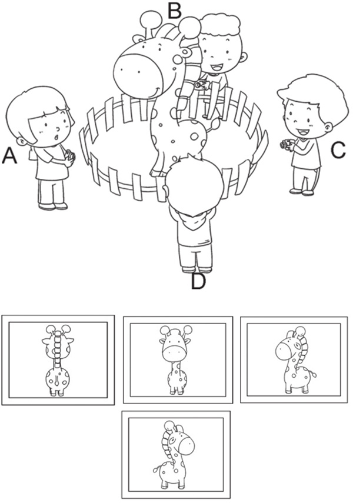